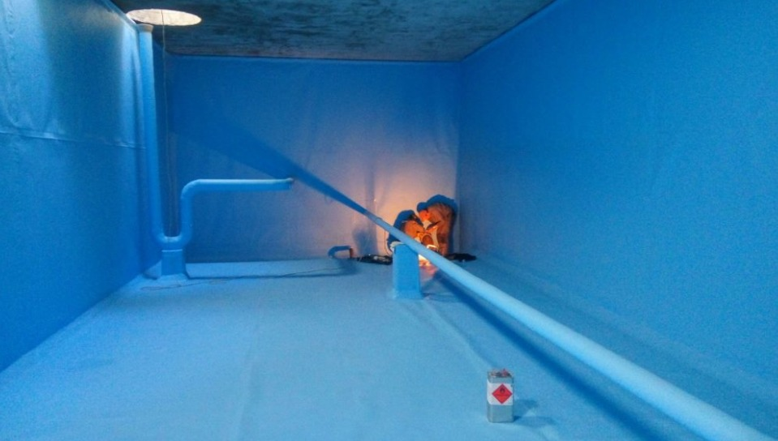
تنظيف خزانات المياه بالرياض
خدمة تنظيف وغسيل للخزانات الأرضية والعلوية لإزالة الأتربة والرواسب والشوائب المتراكمة داخل الخزان، مع تنفيذ خطوات التنظيف المناسبة بحسب نوع الخزان وحالته.
تعتبر العناية الدورية بخزانات المياه ضرورة لضمان صحة أسرتك ونقاء المياه. نحن في إتقان الخليج بصفتنا شركة خزانات بالرياض متخصصة، نقدم حلولاً متكاملة لمعالجة كافة المشاكل التي تواجه الخزانات الأرضية والعلوية بمرور الوقت من تراكم للرواسب والشوائب وحتى الحاجة للعزل وتصليح التسربات.
نضمن لك جودة المياه عبر تقديم خدمة تنظيف الخزانات متبوعة بـ التعقيم الآمن، ونوفر تخصيصاً فنياً لخدمات الخزانات الأرضية والعلوية في كافة أحياء العاصمة. تواصل معنا مباشرة أو اعرف أكثر عن شركتنا عبر صفحة من نحن.
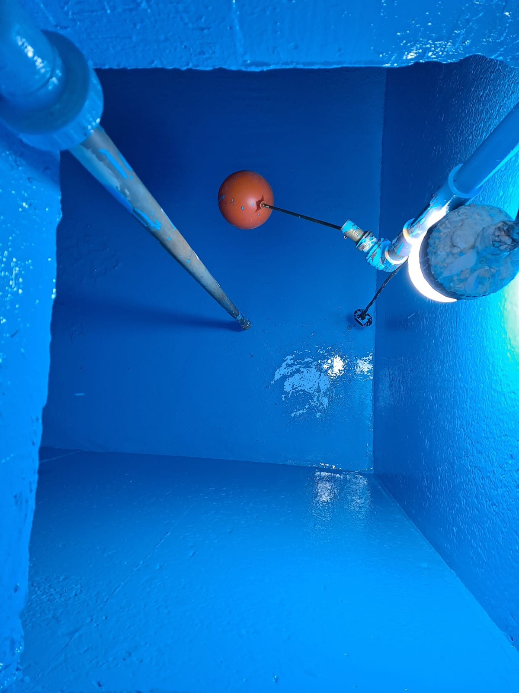
نقدم في إتقان الخليج مجموعة من خدمات تنظيف وتعقيم وعزل وصيانة خزانات المياه بالرياض، مع حلول مخصصة للخزانات الأرضية والعلوية ومعالجة الرواسب والتسربات حسب حالة الخزان.

خدمة تنظيف وغسيل للخزانات الأرضية والعلوية لإزالة الأتربة والرواسب والشوائب المتراكمة داخل الخزان، مع تنفيذ خطوات التنظيف المناسبة بحسب نوع الخزان وحالته.
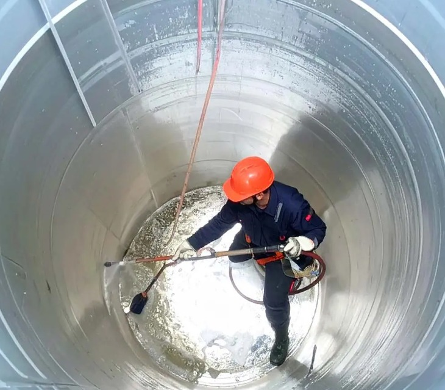
خدمة مخصصة لتعقيم الخزانات بعد التنظيف أو عند الحاجة إلى معالجة التلوث، باستخدام مواد مناسبة لخزانات المياه وبطريقة تتوافق مع حالة الخزان وطبيعة الاستخدام.
حلول عزل مخصصة لحماية الخزان من التسرب والرطوبة بحسب نوع الخزان وحالته، مع تقييم الطريقة المناسبة للعزل قبل التنفيذ.

فحص أسباب تسرب المياه في الخزانات وتحديد موضع المشكلة قبل أعمال المعالجة، مع اختيار أسلوب الفحص المناسب بحسب حالة الخزان ومصدر التسرب.
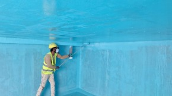
خدمة لفحص ومعالجة المشكلات المرتبطة بالخزان مثل بعض الأعطال أو الشروخ أو مكونات التشغيل، وتحديد الإجراء المناسب وفق الحالة الفعلية.

تنظيف مخصص للخزانات الأرضية مع مراعاة طبيعة الخزان ومساحته وكمية الرواسب المتراكمة داخله، وتجهيز الخزان لمراحل الخدمة المناسبة.
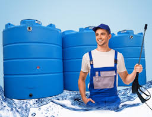
تنظيف الخزانات العلوية بمراعاة نوع الخزان وموقعه وحالته، مع إزالة الأوساخ والرواسب وفق خطوات مناسبة لطبيعة الخزان.
تتعامل إتقان الخليج مع أنواع مختلفة من خزانات المياه في الرياض، وتختلف طريقة التنظيف أو التعقيم أو الصيانة بحسب نوع الخزان وموقعه وحالته الفعلية.
تحتاج الخزانات الأرضية إلى أسلوب تنظيف وفحص يتناسب مع موقعها وحجمها وطبيعة الرواسب أو المشكلات الموجودة بها. نقدم خدمات التنظيف والتعقيم والصيانة بحسب الحالة الفعلية للخزان.
يختلف التعامل مع الخزانات العلوية بحسب نوعها وموقعها وحالتها، لذلك يتم اختيار خطوات الخدمة المناسبة قبل التنفيذ، سواء كان المطلوب تنظيفًا أو تعقيمًا أو فحصًا.
الخزانات الخرسانية قد تتراكم داخلها الرواسب أو تظهر بها بعض المشكلات المرتبطة بالسطح أو العزل، لذلك تختلف طريقة فحصها والتعامل معها بحسب الحالة الفعلية للخزان.
تحتاج الخزانات البلاستيكية إلى طريقة تنظيف مناسبة لطبيعة خامتها مع إزالة الأوساخ والرواسب دون استخدام أسلوب غير ملائم لسطح الخزان.
يختلف التعامل مع خزانات الفيبر جلاس عن بعض أنواع الخزانات الأخرى بحسب حالتها وموقعها، لذلك يتم تحديد أسلوب الخدمة المناسب قبل التنفيذ.
تحتاج خزانات الصاج إلى فحص حالتها الداخلية والخارجية ومراعاة أي آثار للصدأ أو التلف قبل تحديد الإجراء المناسب للتنظيف أو الصيانة أو العزل.
قد تختلف الحاجة إلى تنظيف أو تعقيم أو عزل أو صيانة خزان المياه بحسب حالته ونوعه وطريقة استخدامه. لذلك تساعد بعض العلامات الظاهرة في معرفة متى يكون من المناسب طلب فحص أو خدمة متخصصة.
قد يكون تغير اللون أو الرائحة أو الطعم سببًا لطلب فحص حالة الخزان، خاصة عند وجود رواسب أو تراكمات أو حاجة إلى تنظيف وتعقيم مناسبين.
عند مرور فترة طويلة على آخر تنظيف أو صيانة، يمكن فحص حالة الخزان وتحديد ما إذا كان يحتاج إلى تنظيف أو تعقيم أو أعمال إضافية بحسب حالته الفعلية.
ظهور تسرب أو رطوبة غير معتادة حول الخزان قد يستدعي فحص مصدر المشكلة قبل تحديد طريقة المعالجة المناسبة.
ظهور شروخ أو تلف في بعض أجزاء الخزان يستدعي فحص الحالة لتحديد ما إذا كانت المشكلة تحتاج إلى صيانة أو معالجة إضافية أو عزل بحسب نوع الخزان.
إذا ظهرت مؤشرات مرتبطة بالتسرب أو ضعف العزل، يمكن فحص الخزان لتحديد ما إذا كان العزل المناسب جزءًا من الحل وفق حالة الخزان ونوعه.
هل لاحظت مشكلة في خزان المياه؟ تواصل معنا للفحص والاستفسار
نعتز في إتقان الخليج بثقة عملائنا في كافة مناطق وأحياء الرياض (شمال، شرق، غرب، وجنوب). لقد تميزنا بتقديم خدمات متكاملة للعناية بالخزانات من تنظيف وتطهير وعزل للخزانات الأرضية والعلوية في الفلل والمجمعات السكنية، بفضل الاعتماد على فريق عمل متخصص وتجهيزات متطورة تضمن جودة العمل وسلامة المياه.
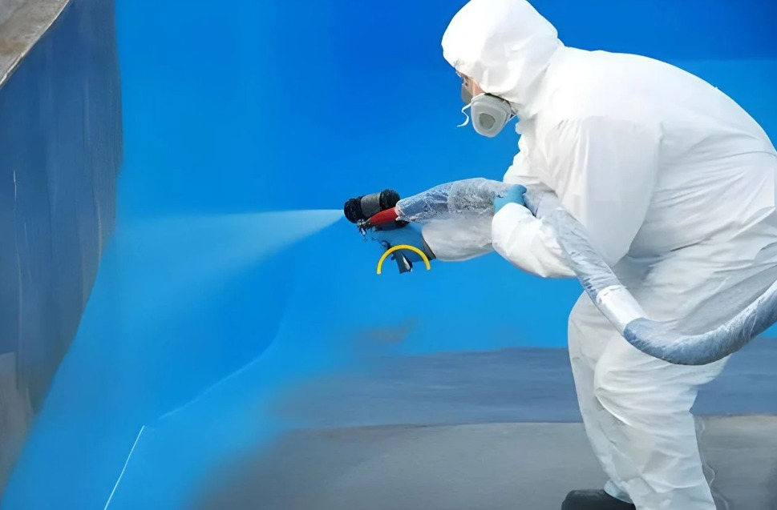
يعتمد اختيار شركة الخزانات المناسبة على وضوح الخدمة وطريقة العمل والتعامل مع حالة الخزان قبل التنفيذ. في إتقان الخليج نركز على فحص احتياج الخزان وشرح نطاق العمل وتحديد الخدمة المناسبة بحسب نوع الخزان وحالته.
تبدأ الخدمة بفهم حالة الخزان ونوعه والمشكلة الموجودة فيه لتحديد ما إذا كان المطلوب تنظيفًا أو تعقيمًا أو صيانة أو عزلًا أو فحصًا إضافيًا.
نوضح للعميل طبيعة العمل المطلوب وما يشمله نطاق الخدمة قبل البدء، حتى تكون الخطوات والتوقعات واضحة بحسب نوع الخدمة وحالة الخزان.
تشمل الخدمات الخزانات الأرضية والعلوية، مع مراعاة اختلاف نوع الخزان وموقعه وحالته عند تحديد طريقة العمل المناسبة.
يتم استخدام الأدوات والمعدات المناسبة لطبيعة الخدمة، مثل معدات التنظيف والشفط وأدوات الفحص، وفق ما تتطلبه حالة الخزان والخدمة المطلوبة.
يعمل على تنفيذ الخدمات فريق متخصص في أعمال تنظيف وتعقيم وصيانة الخزانات، مع اتباع خطوات عمل منظمة بحسب نوع الخدمة.
تختلف تكلفة الخدمة بحسب حجم الخزان ونوعه وحالته ونطاق العمل المطلوب، لذلك يتم تحديد السعر وفق تفاصيل الخدمة بدل الاعتماد على سعر واحد لجميع الحالات.
تحتاج إلى معرفة الخدمة المناسبة لخزانك؟
نوفر في إتقان الخليج أسعاراً مناسبة وشفافة لخدمات العناية بالخزانات معتمدة على حجم ونوع الخزان وحالته. يمكنك التعرف على الأسعار التقديرية للخدمات بالرياض مع توضيح شامل لكافة التفاصيل دون أي مصاريف خفية.
السعر نهائي وشامل مواد التنظيف والتعقيم
فريق مجهز في كافة أحياء شمال، شرق، غرب، وجنوب الرياض
توضيح كامل لكافة خطوات الخدمة والتعقيم
فريق خدمة العملاء جاهز لتقديم المشورة الفنية وأفضل عروض الأسعار على مدار الساعة
تقدم إتقان الخليج خدمات الخزانات داخل مناطق وأحياء الرياض، مع اختلاف نطاق التغطية بحسب موقع العميل ونوع الخدمة المتاحة. يمكنك اختيار المنطقة والأحياء القريبة للاطلاع على تفاصيل الخدمة المتاحة.
تغطية تشمل أحياء شمال الرياض (مثل الملقا، الياسمين، النرجس، حطين، العقيق) لأعمال تنظيف وتعقيم وصيانة الخزانات الأرضية والعلوية.
خدمات متكاملة للعناية بالخزانات في أحياء شرق الرياض (مثل الروضة، الحمراء، الريان، المونسية، اليرموك) وفق المواعيد المتاحة.
خدمات تنظيف وصيانة الخزانات المتاحة للعملاء في أحياء غرب الرياض (مثل ظهرة لبن، السويدي، العريجاء، ونمار) بحسب جدول المواعيد.
تغطية خدمات الخزانات لعملاء أحياء جنوب الرياض (مثل الشفاء، العزيزية، الحائر، والدار البيضاء) وفق نطاق الخدمة المتاح.
استفسر عن إمكانية تقديم الخدمة والمواعيد المتاحة في حيك الآن
يسعدنا تقديم خدمات تنظيف وتعقيم وعزل خزانات المياه بمهنية واحترافية عالية تضمن رضا واستحسان العملاء في جميع أحياء الرياض.
"تعاملت مع إتقان الخليج من أجل تنظيف وتعقيم الخزان الأرضي لفلتي، وكانت الخدمة ممتازة جداً. الفريق استخدم مواد تعقيم عديمة الرائحة ونظفوا الخزان من الترسبات تماماً. أنصح بطلب خدماتهم بشدة."
"أفضل شركة تنظيف وتعقيم خزانات بالرياض تعاملت معها. وصلوا في الموعد المحدد وقاموا بغسيل وتطهير الخزان العلوي والأرضي بعناية شديدة وبسعر منافس للغاية مقارنة بالشركات الأخرى."
"طلبت خدمة عزل وتنظيف الخزان الأرضي، وشرح لي الفني خطوات التعقيم بالكامل. الماء صار صافي ونظيف جداً بعد التنظيف. عمل احترافي وموثوق."
"فريق محترف في غسيل وتعقيم الخزانات، قمنا بالتعاقد معهم لتنظيف خزانات مجمعنا السكني والتزموا بجميع شروط السلامة والتعقيم. خدمة ممتازة وسريعة."
"خدمة كشف تسربات وتنظيف وتعقيم الخزان كانت دقيقة جداً وبدون أي تكسير. الفنيين عندهم أجهزة حديثة ومواد تعقيم ممتازة. شكراً لإتقان الخليج."
"استجابة سرعة وحضور في الوقت المطلوب. نظفوا وعقموا الخزانات العلوية والأرضية في وقت قياسي وبأفضل نتيجة. سعيد بالتعامل المستمر معهم."
يسعدنا دائماً استقبال آرائكم وملاحظاتكم حول خدمة تنظيف وتعقيم الخزانات بالرياض
نقدم منظومة كاملة تشمل تنظيف الخزانات، التعقيم المعتمد، الصيانة الدورية، كشف التسربات بدون تكسير، وعزل الخزانات الخرسانية. لمزيد من التفاصيل اضطلع على دليل خدمات الخزانات بالرياض.

نعم، نتعامل مع الخزانات الخرسانية الأرضية الكبيرة بالإضافة إلى الخزانات العلوية بمختلف مواد الصنع (فيبر جلاس، بلاستيك، وصاج). اكتشف تنظيف الخزانات الأرضية أو تفاصيل غسيل الخزانات العلوية.
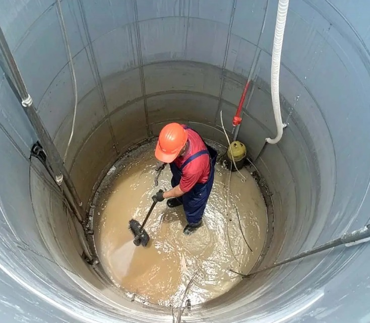
التنظيف يركز على تفريغ الرواسب والأتربة وغسيل قاع وجدران الخزان، بينما التعقيم يتم باستخدام مواد مطهرة مخصصة للقضاء على البكتيريا والميكروبات. تفضل بزيارة صفحة تعقيم خزانات المياه بالرياض.
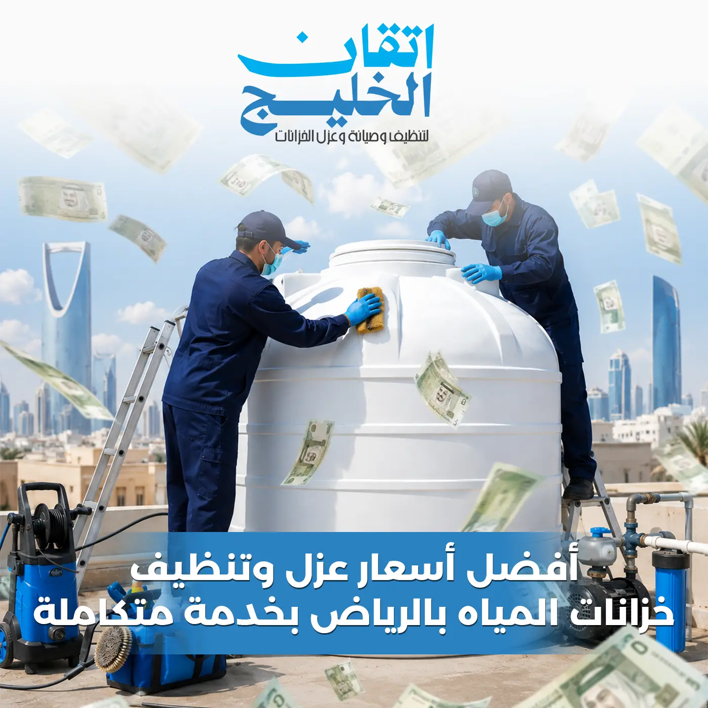
يكون العزل ضرورياً عند وجود ترشيح للمياه نحو الخارج، ظهور تشققات خرسانية، أو تكرار اختلاط المياه بالتربة الجانبية. تعرف على خيارات عزل خزانات المياه بالرياض.
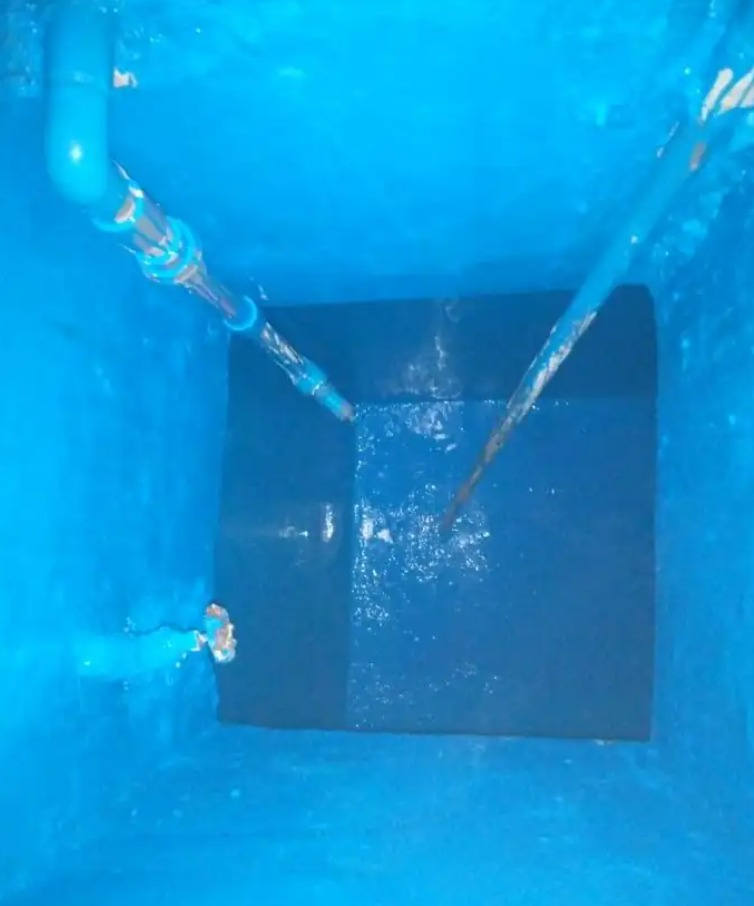
نستخدم تقنيات الفحص الإلكتروني والصوتي الحديثة لتحديد أماكن التسرب والدفان بدقة عالية تحت جدران أو أرضية الخزان. استكشف خدمة كشف تسربات الخزانات.
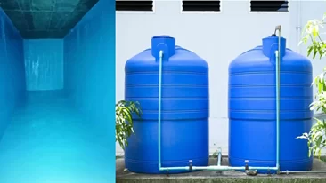
تختلف التكلفة بحسب سعة الخزان التخزينية، نوع الخزان (أرضي أم علوي)، مستوى الرواسب المتراكمة، ومدى الحاجة لإصلاحات إضافية. يمكنك الاطلاع على عوامل تحديد أسعار خدمات الخزانات.
يُنصح بطلب الفحص والصيانة الدورية كل 6 أشهر أو فور ملاحظة تغير طعم ورائحة المياه أو تلف العوامة ومضخات السحب. تفضل بالاطلاع على تفاصيل صيانة خزانات المياه.
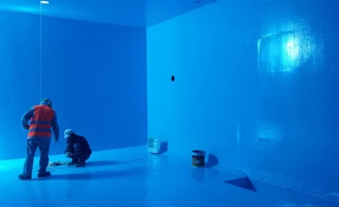
تبدأ التفريغ الجزئي، حظر الاستخدام، فرك الأسطح بمواد آمنة، الشطف بالماء المضغوط، التفريغ الشامل، والتعقيم النهائي بالجرعات المقررة. شاهد تفاصيل تنظيف خزانات المياه بالرياض.
إجابات وافية ومبسطة لأبرز تساؤلات العملاء حول كيفية غسيل، تعقيم، عزل، وصيانة الخزانات للحفاظ على صحة وسلامة أسرتك.
تواصل معنا عبر الهاتف أو الواتساب، وحدد الموعد الأنسب لزيارة فريق تنظيف وتعقيم الخزانات في منزلك بالرياض.
يقوم الفنيون بفحص الخزان وتقييم نسبة التكلسات والرواسب وتحديد كمية ونوعية مواد التطهير والتعقيم المطلوبة.
تفريغ الخزان، غسيل وتنظيف الأسطح الداخلية، رش وتطهير المواد المعقمة، وتطهير المياه بالكامل بمعدات عالية الضغط.
اختبار نقاء الخزان والمياه للتأكد من خلوها من أي رواسب، وتسليمك الخزان مع شهادة الخدمة المعتمدة.
نطبق خطة عمل دقيقة تضمن تنظيف وتعقيم الخزان من الداخل والخارج لتقديم مياه صحية وآمنة 100% لخيال وصحة أسرتك.